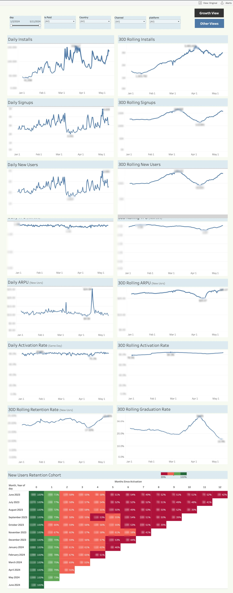
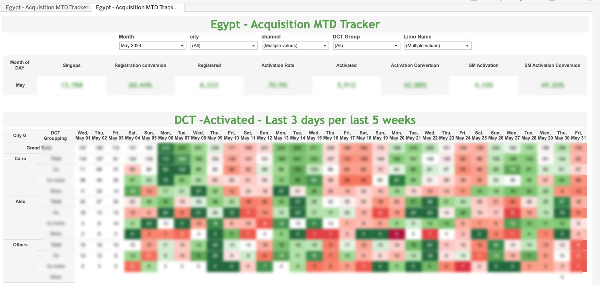

Growth & Acquisition Intelligence
From install to loyal user, tracked daily: paired daily / 30-day-rolling trends for the whole acquisition chain, a column-per-day MTD heatmap, and a new-user retention cohort that answers the question growth teams avoid — do they stick?
Note on numbers: no figure from inside a client dashboard is presented here as an achievement. Published screenshots have absolute figures blurred.
01The Business Problem
Acquisition spend is judged twice: did the funnel convert this month, and did the users it bought stay? Growth teams tracking daily numbers drown in noise; teams tracking monthly numbers react a month late. And a spike in signups means nothing if activation lags — or if the cohort churns by month two.
02My Role
Sole analyst on the product: SQL for the install-to-activation chain, the paired daily/rolling view architecture, the MTD heatmap tracker, and the new-user cohort model.
03What I Built
Growth Dashboard — paired trends
Installs, signups, new users, TPU, ARPU, and same-day activation rate — each charted twice, daily on the left, 30-day rolling on the right, with 30D rolling retention and graduation rates alongside. Noise and signal, on one screen.
Acquisition MTD Tracker
A monthly summary strip (signups, registration conversion, activation rate, social-media activation) above a heatmap with one column per calendar day, split by city group and product grouping, with in-row relative coloring — a slow day shows up the same morning.
New-User Retention Cohort
A 13-month triangle heatmap of monthly acquisition cohorts × months since activation, each cell carrying both retention percentage and absolute counts — the "do they stick" answer, per acquisition month.
Churn & Margin Model (Sheets)
A pivot-based model connecting customer segments to retention, trips, and margin by month, with team-query vs comparison splits. Described text-only: the file carries an internal data classification, so no screenshot is published.
04Signature Build Details
05KPIs Defined & Governed
06Decisions Enabled
Growth Dashboard — paired daily / rolling trends
(blur all absolute figures)assets/gro-growth-dashboard.png

Acquisition MTD Tracker — daily heatmap
(blur all absolute figures)assets/gro-mtd-heatmap.png
